Resham Riwayat
“Your Story, Our Weave. A Legacyin Banarasi Silk.”
A handloom e-commerce & customization platform bringing authentic Banarasi silk sarees from Varanasi's looms to your doorstep.
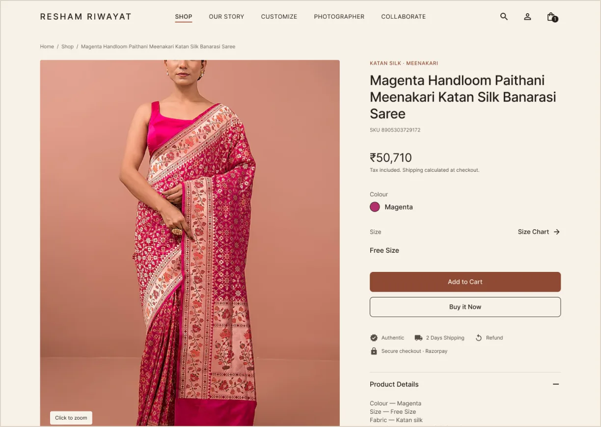
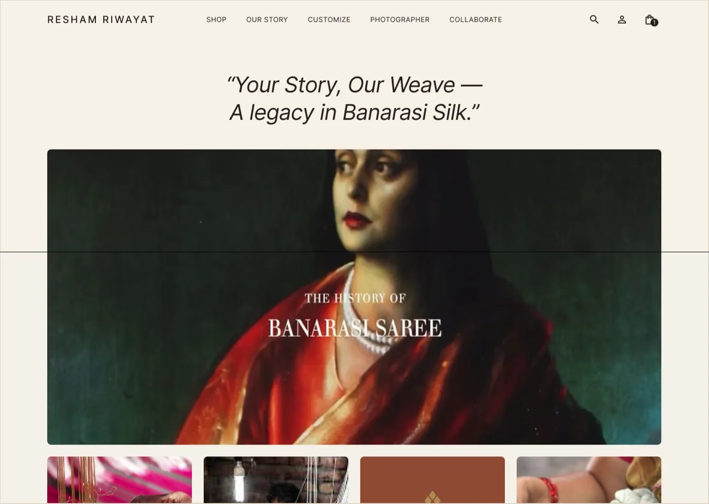
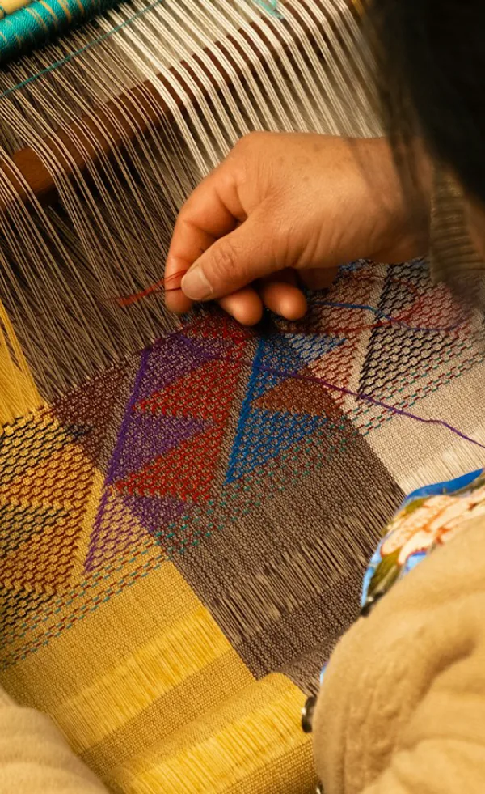
Project Background
Banarasi silk weaving is a centuries-old handloom craft rooted in Varanasi's cultural identity, carrying generations of tradition, skill, and emotional meaning. This project set out to document the entire process from yarn to finished saree, understand the socioeconomic structure of the weaving community, and explore sustainable ways to support artisans through visibility, fair value, and voice.
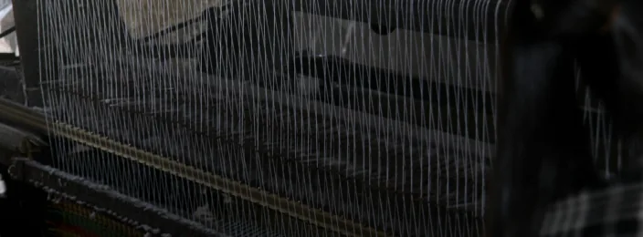
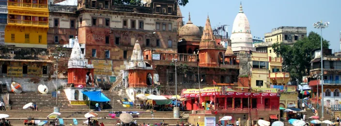
Problem Statement
Banarasi silk is a centuries-old handloom craft rooted in Varanasi's cultural identity. However, its artisans face digital exclusion due to lack of awareness, infrastructure, and institutional support. Without centralized systems or targeted policies, they are left out of modern markets, while most government programs focus on urban industries — overlooking the unique needs of traditional weaving communities.
Design Process
The entire project was completed in ~2 months
Week 1Week 2Week 3Week 4Week 5Week 6Week 7Week 8Swipe to see the full timeline →
Goal Statement
To design a platform that will let saree buyers discover and customize authentic, handwoven Banarasi silk sarees, connect directly with the weavers behind each piece, and book styling or photography support.
This will affect buyers and artisans alike — helping customers verify authenticity and provenance before they buy, while giving weavers a direct, verified channel to reach customers and earn fair value without relying on middlemen.
Target Audience
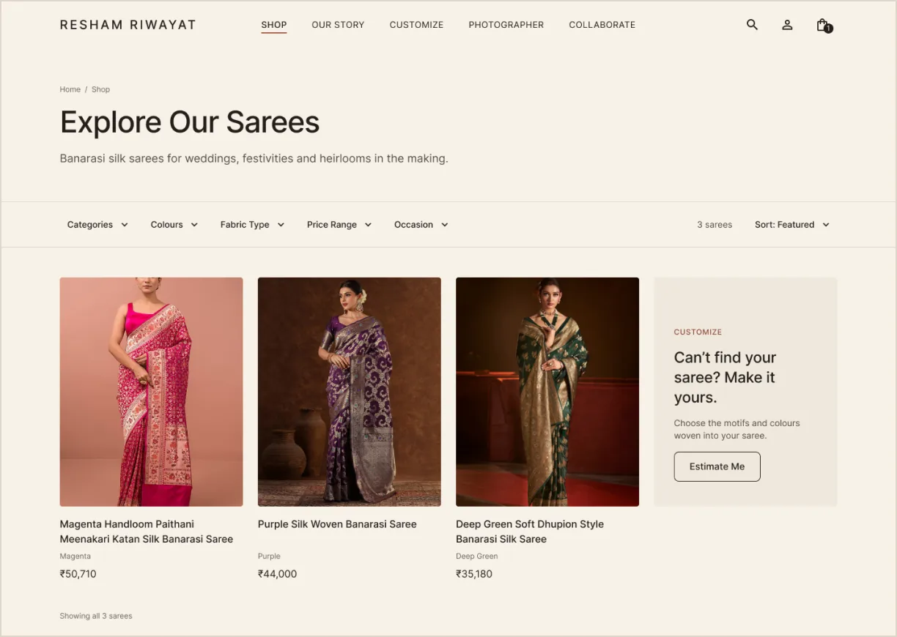
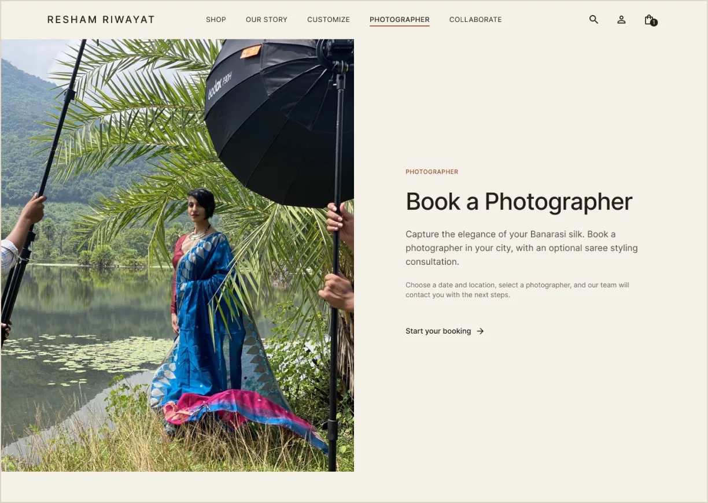
About
It is a platform that aims to help buyers discover and own authentic, handwoven Banarasi silk saree through:
- Browse and filter a curated catalog of handwoven Banarasi sarees by fabric, colour, price, and occasion — or request a custom saree estimate.
- View detailed product pages with sourcing details and sizing, and check out through a simple, guided flow.
- Book a photographer and styling consultation to capture their saree, directly through the site.
Platform Is For
- Browsing, customizing, and purchasing authentic handwoven Banarasi silk sarees.
- Connecting buyers directly with verified weavers and the story behind each saree.
- Booking styling and photography support for a purchased saree.
Platform Is Not For
- Not for teaching or manufacturing the weaving craft itself.
- Not eliminating artisans from the process — the platform supports weavers, not replaces them.
- Not for mass-produced or powerloom sarees — only authentic handloom Banarasi silk.
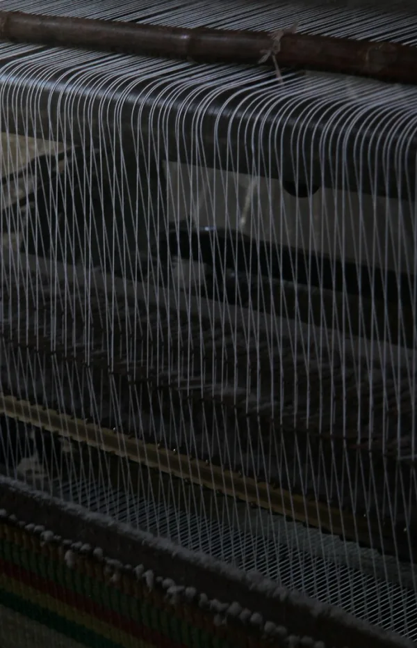
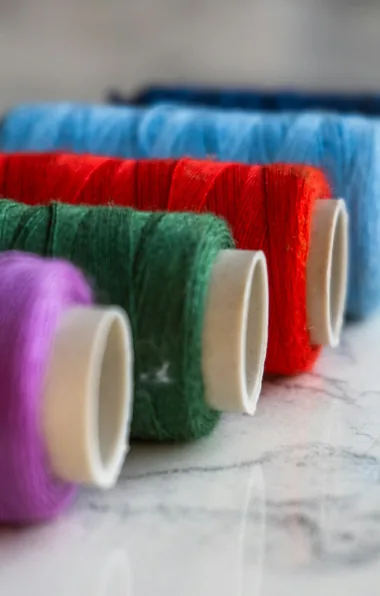
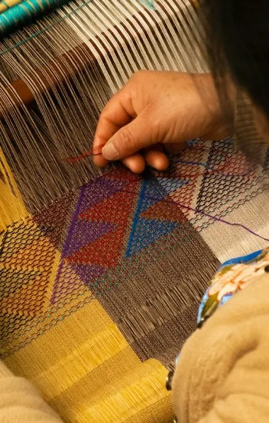
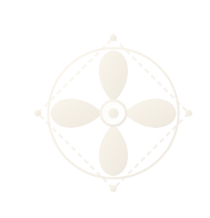
Our Mission
Revolutionize the way authentic Banarasi silk sarees are discovered and bought — connecting buyers directly with the weavers behind every saree, so their craft is seen, valued, and carried home with its true story intact.
1. Secondary Research
1.1 Domain Study
Global Handloom Market$7.8 billion market in 2023, projected to reach $17B by 2033. (Market.us, 2024)
India's Handloom Tradition31.45 lakh households nationwide (4th Handloom Census, 2019–20)
Banarasi Silk, Varanasi~40,000 weavers today, down from 300,000 — one of India's most iconic handloom traditions
India's Handloom Heritage
Handloom weaving is one of India's oldest livelihoods and cultural exports, sustaining over 31 lakh worker households nationwide — with Banarasi silk among its most iconic traditions.
- India observes National Handloom Day every August 7, commemorating the 1905 Swadeshi movement's call to revive indigenous craft.
- Handloom households have grown to 31.45 lakh nationwide (2019–20), up from 27.83 lakh a decade earlier — yet 67% still earn under ₹5,000 a month.
- Banarasi silk flourished under Mughal patronage in Varanasi and remains one of India's most globally recognised handloom crafts.
- Power looms and falling demand have driven Varanasi's own weaver population down from 300,000 to roughly 40,000 today.
1.2 Literature Review
A saree can sell for ₹40,000 — the weaver who made it may earn just ₹2,000.
50+Sources Reviewed
Counterfeit powerloom sarees, mislabeled as handloom, undercut genuine work. In Varanasi itself, handloom weavers have shrunk from 75% of silk workers in the 1990s to just 25% today, as cheaper power-loom imitations took over the market.
A finished Banarasi saree can sell for ₹40,000, yet the weaver who made it by hand often earns just ₹2,000–3,000 for weeks of work — driving debt, migration to cities paying nearly double the wage, and, in the worst cases, over 50 recorded weaver suicides in Varanasi alone.
Online channels make up just 0.2% of handloom sales nationwide, and as power-loom competition eats into income, fewer young weavers are choosing to inherit the craft — threatening a tradition passed hand-to-hand since Vedic times.
1.3 Competitor Analysis
View Detailed Competitor StudyA detailed competitor study was conducted across the following parameters:
Platform Experience & Buyer ReviewsInteraction: Features, Accessibility, NavigationVisual Design: Brand & Craft IdentityContent: Tone & Product DescriptivenessSWOT Analysis
STRENGTHS
Documented weaver stories and provenance details build buyer trust.
High-resolution zoom photography reveals real zari and weave texture.
Curated occasion-based collections (bridal, festive) simplify browsing.
OPPORTUNITY
Show a verifiable handloom mark / weaver certificate at checkout.
Offer in-app photographer & styling booking as a differentiator.
Let buyers book a video call directly with the weaver.
Display a transparent price breakdown showing the weaver's share.
Add regional language support to reach more Indian buyers.
WEAKNESSES
Handloom vs. power-loom distinction is rarely shown at point of sale.
Basic queries are routed to WhatsApp instead of in-app support.
No AR or video draping to preview fit and fall before buying.
Weaver's earning share is never disclosed in the price breakdown.
Few platforms offer multilingual storefronts for non-English buyers.
THREAT
Mass marketplaces sell power-loom "Banarasi-style" sarees far cheaper.
Counterfeit handloom labelling erodes trust across the category.
Rising price sensitivity pushes buyers toward cheaper imitations.
1.4 Stakeholder Map
Everyone who touches — or is touched by — ReshamRiwaayat, from the weaver and buyer at the core to the policies and NGOs shaping the craft's future.
StakeholderDirectly involved in creating or delivering the product or service.
StakeholderAffected by, or able to influence, the platform without daily direct involvement.
2. Design — Final UI
A desktop-first storefront that lets the textile lead: quiet ivory interface, one terracotta action per view, and craft woven into the shopping journey rather than parked on an “About” page.
Home — an editorial story, not a template
The tagline, the history-of-Banarasi film and four craft tiles open the page; collections, the weaving process, customization and photographer booking unfold below.
Shop — quiet filters, image-led grid
Five filters from the original IA (category, colour, fabric, price, occasion) sit in one light bar; the sarees carry the colour.
Product — gallery first, calm purchase column
Magenta · Free Size · ₹50,710 with Add to Cart and Buy it Now together, reassurance under the CTA, details in accordions.
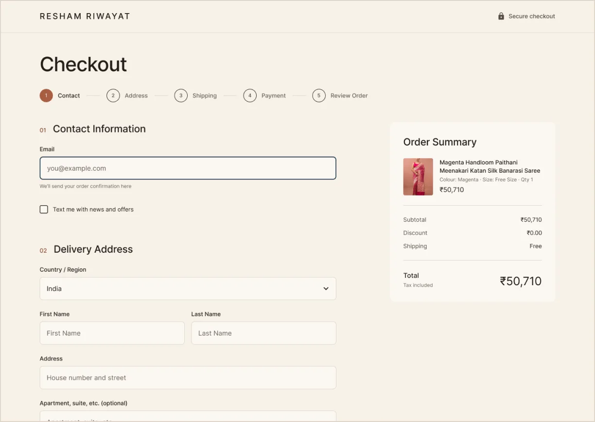
Checkout — five clear steps
Contact, Address, Shipping, Payment and Review with an always-visible order summary, ending in one explicit “Pay ₹50,710”.
Book a Photographer — a request, not a promise
Choose date, location and photographer, add styling if wanted; the flow ends in “request received”, matching how the team actually follows up.
This project is a part of an ongoing research